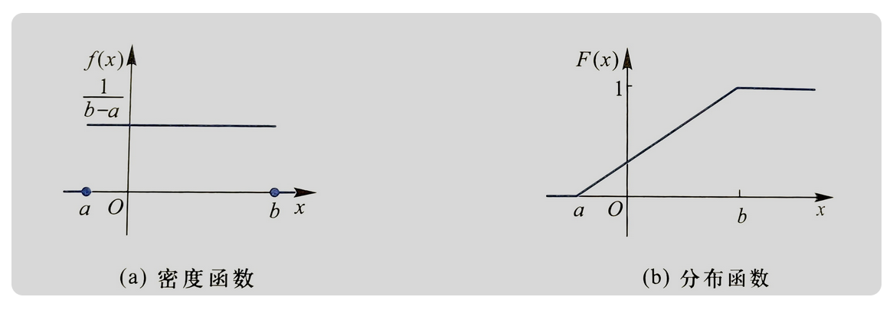
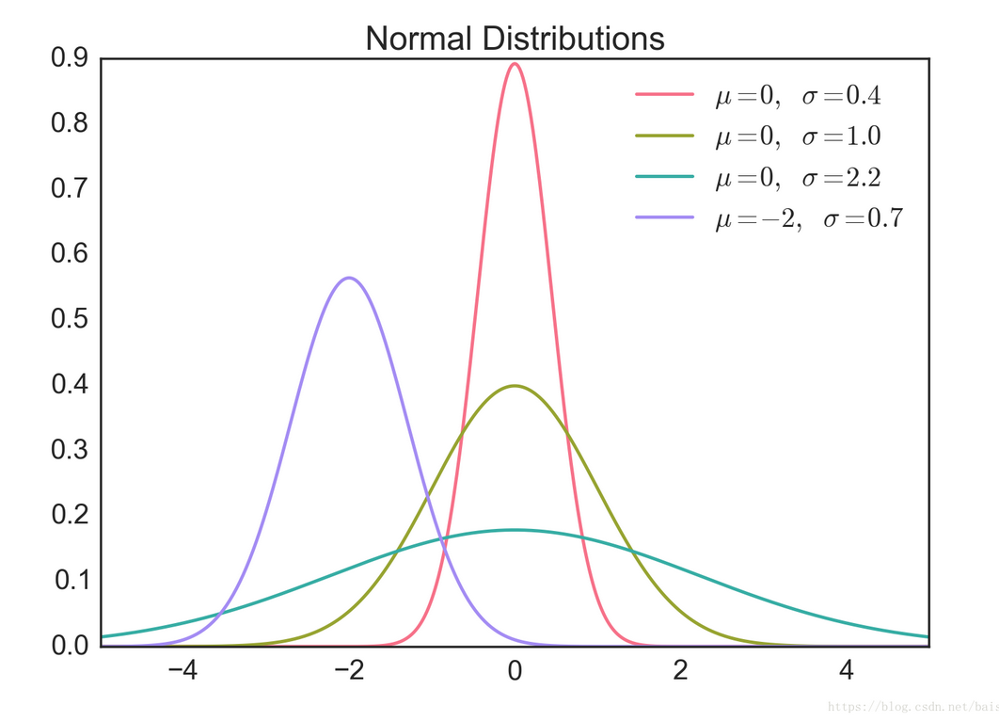
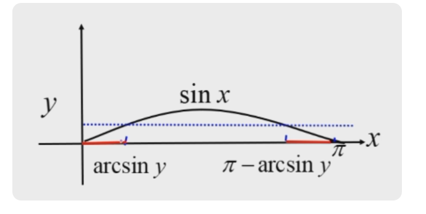

Chapter 2 随机变量及其概率分布¶
符号速览
- 两点分布：\(X\sim B(1,p)\) 或者 \(X\sim 0-1(p)\)
- 二项分布：\(X\sim B(n,p)\)
- 泊松分布：\(X\sim P(\lambda)\)
- 超几何分布：\(X\sim H(n,a,N)\)
- 帕斯卡分布：\(X\sim NB(r,p)\)
- 均匀分布：\(X\sim U(a,b)\)
- 指数分布：\(X\sim E(\lambda)\)
- 正态分布：\(X\sim N(\mu,\sigma^2)\)
随机变量是定义在样本空间\(S\)上的实值单值函数。常用大写字母\(X,Y,Z\)来表示随机变量，用小写字母\(x,y,z\)表示其取值。
我们存在既非离散型也非连续型的随机变量，但本课程不涉及。
离散型随机变量¶
离散型随机变量(discrete random variable)：如果随机变量取有限个或可列个值，则此随机变量为离散型随机变量，而若其可能取值为\(\{x_i\}\)，则称\(P\{X=x_k\}=p_k\;,\;k=1,2,...\)为\(X\)的概率分布律(probability mass function)，也可以用列表的方式表达。
因为样本空间\(S=\{X=x_1,X=x_2,\,...\,,X=x_n\,...\,\}\)中各样本点两两不相容，所以：
两点分布¶
如果随机变量\(X\)的概率分布律为：
则称 \(X\) 为服从参数为 \(p\) 的 \(0-1\) 分布，也称为两点分布，并记为 \(X\sim B(1,p)\) 或者 \(X\sim 0-1(p)\)
二项分布¶
伯努利试验：在 \(n\) 次独立重复试验中，每次只有 \(A\) 和 \(\overline A\) 两种结果，且概率不变，则这一系列试验为伯努利试验。
若随机变量\(X\)表示\(n\)重伯努利实验中事件A发生的次数，其概率分布律为：
则称\(X\)为服从参数为\((n,p)\)的二项分布(binomial distribution)，并记为\(X\sim B(n,p)\)
根据二项式定理，二项分布有如下性质：
- 如果遇到来自于两点分布的总体的，容量为\(n\)的样本的均值\(\overline X\)，则有\(n·\overline X=\sum\limits_{i=1}^n X_i \sim B(n,p)\)
泊松分布¶
如果随机变量\(X\)的概率分布律为：
其中\(\lambda > 0\)，则称\(X\)服从参数为\(\lambda\)的泊松分布(Poisson distribution)，记做\(X \sim P(\lambda)\)
当\(n\)足够大，\(p\)充分小(一般要求\(p<0.1\))，且\(np\)保持适当大小时，参数为\((n,p)\)的二项分布可以用泊松分布近似描述，其中\(\lambda = np\)，即：
超几何分布¶
共有\(N\)个元素，其中\(a\)个为\(A\)类元素，\(b\)个为\(B\)类元素，从中任取\(n\)个元素，\(X\)为\(A\)类元素的个数。
如果随机变量\(X\)的概率分布律为：
其中\(l_1=\max\{0,n-b\}\)，\(l_2=\min\{n,a\}\)，
则称\(X\)为服从超几何分布(hypergeometric distribution)，并记为\(X\sim H(n,a,N)\)
几何分布¶
事件\(A\)发生的概率为\(p\)，则\(X\)为第一次发生\(A\)的时候，经历了多少次试验。
如果随机变量\(X\)的概率分布律为：
则称\(X\)为服从参数为 \(p\) 的几何分布(geometric distribution)。
帕斯卡分布¶
事件\(A\)发生的概率为\(p\)，则\(X\)为第\(r\)次发生\(A\)的时候，经历了多少次试验。
如果随机变量\(X\)的概率分布律为：
则称\(X\)为服从参数为\((r,p)\)的帕斯卡分布(Pascal distribution)，也称为负二项分布(negative binomial distribution)，并记为\(X\sim NB(r,p)\)
分布函数¶
定义：设\(X\)为随机变量，\(x\)为任意实数，函数\(F(x)=P\{X\leq x\}\)为随机变量\(X\)的概率分布函数，简称为分布函数(distribution function)。
则有以下结论：
当\(X\)为离散型随机变量时，设\(X\)的概率分布律为\(P\{X=x_i\}=p_i\;,\;\;i=1,2,...\)，则\(X\)的分布函数为：
关于\(F(x)\)有以下结论：
- \(F(x)\)单调不减；
- \(0\leq F(x) \leq 1\)且\(F(-\infty)=0\)，\(F(+\infty)=1\)；
- \(F(x)\)右连续，即\(F(x+0)=F(x)\)；
- 不一定左连续，左极限得到的是\(P\{X<x\}\)，而不是\(P\{X\leq x\}\)；
- \(P(a<X\leq b)=F(b)-F(a)\)；
连续型随机变量¶
密度函数¶
如果对于随机变量\(X\)，其分布函数为\(F(x)\)，若存在一个非负的实函数\(f(x)\)，使对于任意实数\(x\)，有：
则称\(X\)为连续型随机变量，并且称\(f(x)\)为\(X\)的概率密度函数(probability density function)，简称为密度函数。
关于\(f(x)\)有以下结论：
- \(f(x) \geq 0\)；
- \(\int_{-\infty}^{\infty}f(x)dx=1\)；
- \(\forall x_1,x_2\in \mathbf{R}\;\;(x_1<x_2)\;,\;\;P\{x_1<X\leq x_2\}=F(x_2)-F(x_1)=\int^{x_2}_{x_1}f(t)dt\)；
- 在\(f(x)\)的连续点\(x\)处，\(F'(x)=f(x)\)
- \(P\{X=a\} = 0\)，即连续型随机变量任取一个定值的概率为零，因此连续型随机变量落在开区间与相应闭区间上的概率相等；
均匀分布¶
设随机变量\(X\)就有密度函数：
则称\(X\)服从区间\((a,b)\)上的均匀分布，并记为\(X\sim U(a,b)\)
而得到对应的分布函数为：

指数分布¶
若随机变量\(X\)具有密度函数：
也有地方写成这样：
其中\(\lambda > 0\)，则称\(X\)服从参数为\(\lambda\)的指数分布(exponential distribution)，记为\(X\sim E(\lambda)\)
指数分布对应的分布函数为：
指数分布具有无记忆性，即\(P(X>t_0+t | X>t_0)=P(X>t)\)。
指数分布的无记忆性
假设 \(t_0>0\)，\(t>0\)，
无记忆性的一个例子
假设设备无故障运行的时间 \(T\) 服从指数分布。已知设备无故障运行了10个小时，求该设备再无故障至少运行8个小时的概率。
注意到，这一条件概率与无条件下无故障运行8小时的概率没有区别。
正态分布¶
如果随机变量\(X\)具有密度函数：
其中\(\sigma>0\;,\;|\mu|<+\infty\)为常数，则称\(X\)服从参数为\((\mu,\sigma)\)的正态分布(normal distribution / Gauss distribution)，或者称\(X\)为正态变量，记为\(X\sim N(\mu,\sigma^2)\)。
其对应的分布函数为：
在上面出现的式子中，\(\mu\)为位置参数，决定了分布图像的对称轴位置；\(\sigma\)为尺度参数，决定了形状，\(\sigma\)越小，图像越集中。

特别的，当\(\mu=0\;,\;\sigma=1\)时，如果记这时的正态变量为\(Z\)，即\(Z\sim N(0,1)\)则它服从标准正态分布(standard normal distribution)。则其密度函数为：
则对应的分布函数为：
- 则显然有\(\Phi(x)+\Phi(-x)=1\)
- 然而由于其无法计算，所以我们需要查表获得具体值，以下为标准正态分布表：
正态分布标准化¶
而对于不是标准正态分布的正态分布，我们可以通过线性变换（标准化）来转换为标准正态分布：
当 \(X\sim N(\mu,\sigma^2)\) 时：
做变换：\(\frac{x-\mu}{\sigma} = t\)
换言之，当 \(X\sim N(\mu,\sigma^2)\) 时，\(\frac{X-\mu}{\sigma}\sim N(0,1)\)
我们有以下结论：
- 若\(X\sim N(\mu,\sigma^2)\)，则\(P\{a<X<b\}= P\{\frac{a-\mu}{\sigma}< \frac{X-\mu}{\sigma} < \frac{b-\mu}{\sigma} \}=\Phi(\frac{b-\mu}{\sigma})-\Phi(\frac{a-\mu}{\sigma})\)
- 特别的：若\(X\sim N(\mu,\sigma^2)\)，则\(P\{|X-\mu|<k\sigma\} = \Phi(k)-\Phi(-k)=2\Phi(k)-1\)，这说明在对称轴左右，以\(\mu\)倍数为区间的概率值，与\(\mu\)和\(\sigma\)都无关。
- \(3\sigma\)法则
随机变量函数的分布¶
离散型随机变量的函数的分布律很简单，此处不再赘述。
连续型随机变量的函数的分布¶
当\(Y=g(X)\)为连续型随机变量时，我们总是可以通过求出\(Y\)的分布函数\(F_Y(y)\)，然后对\(F_Y(y)\)求导得到\(Y\)的密度函数\(f_Y(y)\)。
\(Y=\sin X\)，其中\(X\sim U(0,\pi)\)，求\(f_Y(y)\)。
解：
\(F_Y(y)=P\{Y\leq y\}=P\{\sin X\leq y\}\)

由上图可知，
于是，在\(y\in(0,1)\)时，\(F_Y(y)=\frac{2\arcsin y}{\pi}\)，\(y\not\in(0,1)\)时，\(F_Y(y)=0\)，则\(Y\)的密度函数为：
\(y=g(x)\)单调时，我们有如下定理：
如果：
- \(X\)为连续型随机变量，且其密度函数为\(f_X (x)\)；
- 随机变量\(Y=g(X)\)；
- 函数\(y=g(x)\)为一严格单调（增/减）函数，并且可微；
则记\(y=g(x)\)的反函数为\(x=h(y)\)，得到\(Y\)的密度函数为：
- 其中\(D\)为\(y=g(x)\)的值域。
正态分布的线性变换¶
有关正态分布的重要结论：
若\(X\sim N(\mu,\sigma^2)\)，则\(Y=aX+b \sim N(a\mu+b,a^2\sigma^2)\)
- 标准化：特别的，若\(X\sim N(\mu,\sigma^2)\)，则\(\frac{X-\mu}{\sigma}\sim N(0,1)\)；
- 即正态分布的随机变量线性变换后正态性不变；